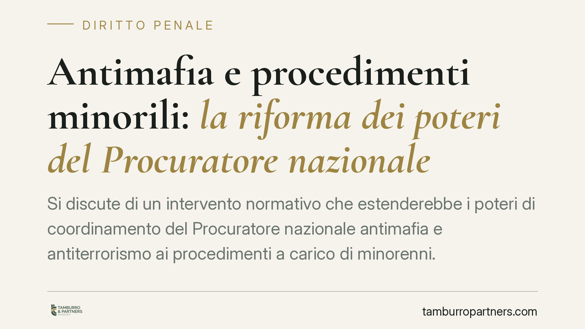

Antimafia e procedimenti minorili: la riforma dei poteri del Procuratore nazionale
Si discute di un intervento normativo che estenderebbe i poteri di coordinamento del Procuratore nazionale antimafia e antiterrorismo ai procedimenti a carico di minorenni. Il tema tocca l'equilibrio tra esigenze investigative sovradistrettuali e finalità educativa del processo minorile. Allo stato il testo richiede verifica ufficiale: ne analizziamo le implicazioni in via prudenziale.

Premessa metodologica
Circola la notizia di un decreto legge che amplierebbe le funzioni del Procuratore nazionale antimafia e antiterrorismo (PNA) estendendole ai procedimenti a carico di minorenni. Avvertiamo subito il lettore: alla data di redazione il contenuto del provvedimento non risulta verificabile sulla Gazzetta Ufficiale con numero, data e testo certi. Per questo trattiamo la questione in forma condizionale. Su una materia di garanzia come il processo penale minorile non riteniamo corretto commentare come vigente un testo non confermato.
Il quadro normativo di riferimento
Le funzioni del Procuratore nazionale antimafia e antiterrorismo sono disciplinate dall'art. 371-bis c.p.p. La norma attribuisce al PNA poteri di impulso e coordinamento delle indagini relative ai reati indicati nell'art. 51, comma 3-bis, c.p.p. (associazione di tipo mafioso, delitti aggravati dal metodo mafioso, alcuni reati in materia di stupefacenti e altre fattispecie assimilate) e ai delitti con finalità di terrorismo.
Il punto qualificante è la natura di tale potere: si tratta di coordinamento, non di sovraordinazione gerarchica. Il PNA armonizza l'azione delle Direzioni distrettuali antimafia e promuove la circolazione delle informazioni, ma non si sostituisce al titolare dell'indagine né dirige l'esercizio dell'azione penale. È una distinzione tecnica, non formale: definisce chi conserva la responsabilità delle scelte processuali.
L'intervento di cui si discute riguarderebbe appunto l'art. 371-bis c.p.p., estendendo la funzione di coordinamento ai procedimenti trattati dalle procure presso i tribunali per i minorenni, quando abbiano a oggetto reati di competenza antimafia. Precisiamo che non ci risulta pertinente, sul coordinamento investigativo, il riferimento all'art. 105 del d.lgs. 159/2011 (Codice antimafia), norma che attiene alla materia dell'amministrazione dei beni sequestrati e confiscati nell'ambito delle misure di prevenzione patrimoniali: citazione che, in questa sede, va esclusa.
La tensione con il processo minorile
Il nodo interpretativo più delicato riguarda il rapporto con i principi del processo penale minorile, retto dal D.P.R. 448/1988. Quel sistema è costruito attorno alla finalità educativa e al recupero del minore: istituti come la messa alla prova, l'irrilevanza del fatto e la minima offensività esprimono una logica diversa da quella della repressione associativa.
Estendere al settore minorile un coordinamento nato per le indagini antimafia sovradistrettuali solleva una domanda non banale: fino a che punto l'esigenza investigativa può operare senza comprimere le garanzie specifiche del minore? Una lettura costituzionalmente orientata imporrebbe che il coordinamento resti strumentale allo scambio informativo e non incida sulle scelte proprie della giurisdizione minorile, che restano del procuratore e del tribunale per i minorenni.
Implicazioni pratiche per la difesa
Se il provvedimento fosse confermato nei termini ipotizzati, il difensore del minore indagato per reati riconducibili all'art. 51, comma 3-bis, c.p.p. dovrebbe confrontarsi con un flusso informativo più ampio e con possibili impulsi provenienti dalla Direzione nazionale antimafia.
Resta fermo, però, che il coordinamento non trasferisce la titolarità del procedimento. Il difensore dovrà quindi vigilare affinché gli atti di impulso non si traducano, di fatto, in una direzione dell'indagine estranea alle prerogative del giudice minorile e alle garanzie del rito.
Cosa fare in concreto
- Verifica la fonte. Prima di qualsiasi valutazione difensiva, accertare su Gazzetta Ufficiale l'esistenza, il numero e il testo effettivo del provvedimento e del relativo decreto di conversione.
- Qualifica il titolo di reato. Controllare se l'imputazione rientri davvero nell'elenco dell'art. 51, comma 3-bis, c.p.p.: solo in tal caso opererebbe il coordinamento antimafia.
- Presidia le garanzie minorili. Richiamare in ogni atto l'applicabilità dei principi del D.P.R. 448/1988, verificando che le esigenze di coordinamento non ne comprimano gli istituti.
- Distingui coordinamento e direzione. Eccepire ogni atto che travalichi la funzione di mero raccordo, invadendo le scelte riservate alla procura e al tribunale per i minorenni.
- Monitora l'iter. È opportuno seguire l'eventuale conversione del decreto, nel termine costituzionale di sessanta giorni (art. 77 Cost.), per cogliere modifiche rilevanti del testo.
Disclaimer
Contributo informativo a cura di Tamburro & Partners - Avv. Giuseppe Tamburro. Non costituisce parere legale.
Ogni condominio ha una storia a sé.
Se gestisci un'amministrazione e vuoi un confronto su una specifica questione condominiale, scrivi allo studio. Ti rispondiamo entro un giorno lavorativo.